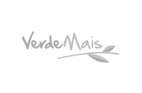
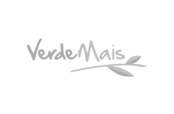
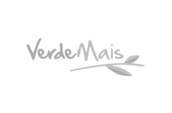

Comunicação corporativa que sai do discurso e entra na rotina.
Clareza nas conversas, decisões mais rápidas e comportamentos que se refletem
nos indicadores — já nas semanas seguintes.
O problema não é falta de estratégia. É ruído na comunicação.
Em muitas empresas, pessoas competentes não performam como poderiam
porque a comunicação gera ruído, resistência silenciosa e decisões travadas.
O custo aparece em clima, retrabalho e resultados abaixo do potencial.
O que muda depois da palestra
✔ Engajamento que se sustenta
✔ Comunicação clara e conectiva
✔ Liderança com influência real
✔ Produtividade com foco
✔ Feedback que gera evolução
✔ Mudança com menos resistência
Sobre o palestrante
Edi Born
Trainer em Programação Neurolinguística e comunicação de alta performance
há mais de 15 anos. Fundador da eXpertar, já formou mais de 1.000 alunos
e atua em empresas, MBAs e projetos corporativos.
Desenvolveu a PNL da vida cotidiana: linguagem clara, prática e aplicável
às conversas reais do ambiente corporativo.
Comunicação com InfluênciaLiderança & Alta PerformanceGestão de Mudança sem RuídoMotivação & Propósito na PráticaComunicação Não ViolentaVendas com PNL
Por onde já eXpertamos

“A experiênica potencializou muito o meu desempenho nos negócios,
e melhorou ainda mais a minha relação cotidiana, me tornou uma pessoa
muito mais segura e positiva.”
— Empresária do ramo estético
“Time comercial adorou o treinamento, foi dinâmico e cheio de práticas
aplicáveis logo no momento seguinte, com o próximo atendimento.”
— Gerente Comercial Unimed
Sua empresa está pronta para conversar melhor?
Vamos identificar os gargalos de comunicação e desenhar a palestra
ideal para o seu momento.


 
